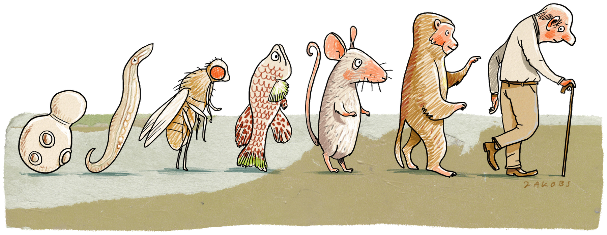

Illustration
The March of Aging
Aging mechanisms are conserved from single cells to people.

The pathways that sense nutrients and energy, and help set the pace of aging, are shared across life, from yeast to humans. That is why we choose each model for what it can reveal and then test what we find across systems, from short-lived animals to mice and people.
Drawn for William Mair by his friend Günther Jakobs.
© MAIR Lab and Günther Jakobs. Please do not use without permission.